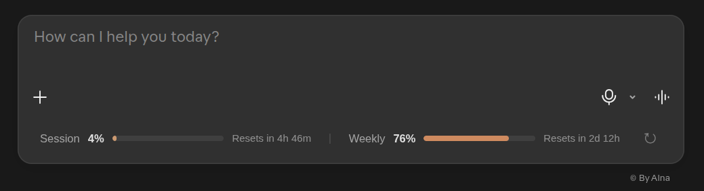

A little clarity for your AI usage · By Alna
Token Mileage
Track Claude Code or Codex tokens with a desktop odometer, or see your Claude.ai plan usage inside Chrome. Choose your tool below. Free and open source.
Version 1.2.0 · Windows and Ubuntu (macOS works too) · By Alna
Choose your tool
Two desktop meters. One browser extension. Pick where you work to get started.


Claude Code Odometer
Tokens Claude Code used on this computer, live session dots, and your plan's session and weekly usage, like /usage.


Codex Odometer
Tokens Codex used on this computer, recent sessions, and the last plan limits Codex recorded. It never reads your sign-in.
Download Codex
Claude.ai Chrome extension
See session and weekly usage bars and reset countdowns inside Claude.ai's message box and sidebar.
No Python or desktop widget needed. Use Chrome on a computer.
Download Chrome extensionChoose a tool above to see its download and setup.
Your download
Claude Code Odometer
Download for Claude CodeYour download
Codex Odometer
Download for CodexYour download
Claude.ai Chrome extension
Download Chrome extensionAdd the extension to Chrome
This download uses Chrome's manual installation. A website cannot add it automatically; you complete the steps below once.
- Download the extension ZIP and extract it into a folder you will keep, such as
Documents/Token-Mileage-Chrome. - Copy
chrome://extensionsinto Chrome's address bar and press Enter. - Turn on Developer mode at the top right.
- Click Load unpacked. Select the extracted folder containing
manifest.json, then click Select Folder or Open. - Open Claude.ai, sign in, and refresh the page. Usage appears inside the bottom of the message box, with © By Alna below it, and under Projects when the sidebar is expanded.
Select the extracted folder, not the ZIP. Keep that folder in place. If you see duplicate usage displays, disable your other Claude usage extension.
Updates, removal and automatic installation
Update: extract the new download into the same folder, replacing the old files. On chrome://extensions, click this extension's reload button, then refresh your Claude tabs.
Remove: on chrome://extensions, find the extension and click Remove.
Automatic installation: administrators can configure this for managed work or school browsers. For personal Chrome, a Chrome Web Store release would provide an Add to Chrome button and automatic updates; you would still confirm the first installation. This download is an unpacked extension, not a Web Store listing.
Google's manual setup instructions · Managed browser installation
Install a desktop meter yourself
One zip works on every system. You need Python 3.9 or newer.
- Install Python from python.org if you don't have it (keep "tcl/tk" ticked).
- Unzip the download, for example into
Documents. - Open the unzipped folder, click the address bar, type
cmdand press Enter. Then run:
py install.py --launch
This adds a desktop icon and a Start Menu entry. Add --autostart to start it when you log in.
- Make sure Tk is installed:
sudo apt install python3-tk - Unzip the download, for example into your home folder.
- In a terminal inside that folder run:
python3 install.py --launch
This adds a desktop icon and an app menu entry. Add --autostart to start it when you log in.
Let your AI install the desktop meter
Copy a prompt and paste it into Claude Code, Codex or another coding assistant running on the computer. It downloads, checks and installs everything for you.
Claude Code Odometer
Install the Claude Code Odometer (Token Mileage) on this computer for me. 1. Download https://token-mileage.ebrahim-alnasser.com/downloads/token-mileage-claude.zip and unzip it into my home folder, so the files are in ~/token-mileage-claude (Windows: %USERPROFILE%\token-mileage-claude). 2. Find Python 3.9 or newer. On Windows use "py" (never "python3"). If Python or Tk is missing, tell me the exact command to install it and wait for me. 3. In that folder run "doctor.py" and fix anything marked fail. Give me any sudo command to run myself. 4. Run "install.py --launch" to add the desktop and menu shortcuts and open it. Ask me first if I want "--autostart" (start at login). 5. Run "install.py --status" and tell me where the shortcut is. Do not change the "By Alna" credit or the LICENSE.
Codex Odometer
Install the Codex Odometer (Token Mileage) on this computer for me. 1. Download https://token-mileage.ebrahim-alnasser.com/downloads/token-mileage-codex.zip and unzip it into my home folder, so the files are in ~/token-mileage-codex (Windows: %USERPROFILE%\token-mileage-codex). 2. Find Python 3.9 or newer. On Windows use "py" (never "python3"). If Python or Tk is missing, tell me the exact command to install it and wait for me. 3. In that folder run "doctor.py" and fix anything marked fail. Give me any sudo command to run myself. 4. Run "install.py --launch" to add the desktop and menu shortcuts and open it. Ask me first if I want "--autostart" (start at login). 5. Run "install.py --status" and tell me where the shortcut is. Do not change the "By Alna" credit or the LICENSE.